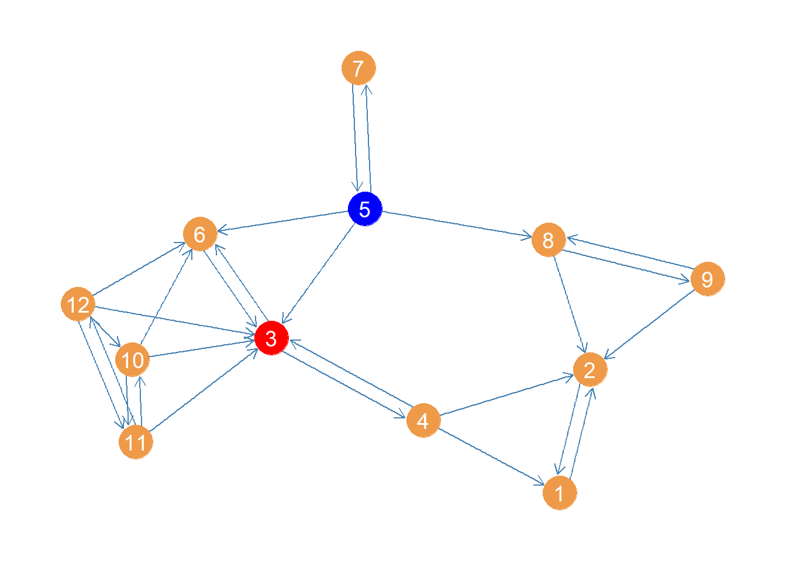

Recall that, according to Freeman (1979), the key conceptual distinction between closeness and betweenness is between (pun intended) the capacity to reach others quickly (e.g., via the shortest paths) and the capacity to intermediate among those same paths. High betweenness nodes control the flow of information in the network between other nodes that flows via shortest.
Let us begin by defining some basic concepts on which betweenness centrality measures are built.
Pairwise Dependency, One-Sided Dependency, and Betweenness
We can define the pair dependency\(\delta_{i(k)j}\)(Brandes 2001, 166) of any two nodes \(\{i, j\}\) on any third node \(k\) in the graph as follows:
Where the denominator of the fraction (\(\sigma_{ij}\)) is a count of the total number of shortest paths that start and end with nodes \(i\) and \(j\) and the numerator of the fraction (\(\sigma_{i(k)j}\)) is the subset of those paths that include node \(k\) as an inner node.1
Because Equation 1 is a ratio it can range from zero to one with everything in between. As such the pair dependency of a pair of nodes relative to a third has an intuitive interpretation as a probability, namely the probability that if you send something starting from \(i\) in order for it to get to \(j\) it has to go through\(k\). This probability is 1.0 if \(k\) stands in every shortest path between \(i\) and \(j\) and zero if \(k\) does not lie in any of the shortest paths linking \(i\) and \(j\).
We can also define the one-sided dependency of any one node \(i\) on any other node \(k\) in the graph as the sum of the pairwise dependencies on \(k\) that involve \(i\) across every other node \(j\): \[
\delta_{i|k} = \sum_j \delta_{i(k)j}
\tag{2}\]
The betweenness centrality of a node \(k\) is then defined as the sum of the dependencies that every pair of nodes in the graph has on that node:
Let’s see an example of how to calculate betweenness centrality using real data. We first load our trusty Pulp Fiction data set from the networkdata package, which is an undirected graph of character scene co-appearances in the film:
library(networkdata)library(igraph)library(stringr) #using stringr to change names from all caps to title case g <- movie_559V(g)$name <-str_to_title(V(g)$name)V(g)$name[which(V(g)$name =="Esmarelda")] <-"Esmeralda"#fixing misspelled nameE(g)$weight <-1#setting weights to 1.0 (relevant for betweenness calculation)V(g)$name
To compute the components of the betweenness centrality defined earlier, we need two pieces of information. First we need to know the length of the shortest path between every pair of nodes. As we saw in our discussion of closeness, this is stored in the geodesic distance matrix (\(\mathbf{G}\)) of dimensions \(N \times N\). In igraph we can calculate the entries for \(\mathbf{G}\) using the distances function:
Next we need to know the number of shortest paths linking every pair of nodes (as nodes can be linked by multiple distinct shortest paths). In igraph we can use the all_shortest_paths function to figure out this information.
For instance, let’s say we wanted to find the number of shortest paths between the pair of nodes “Young Man” (at the diner) and “The Pedestrian” (who appears when Butch encounters Marsellus on the street). To do that we can just type:
ap <-all_shortest_paths(g, from ="Pedestrian", to ="Young Man") ap$vpaths
[[1]]
+ 5/38 vertices, named, from 9e7cc7a:
[1] Pedestrian Butch Jules Honey Bunny Young Man
[[2]]
+ 5/38 vertices, named, from 9e7cc7a:
[1] Pedestrian Marsellus Jules Honey Bunny Young Man
[[3]]
+ 5/38 vertices, named, from 9e7cc7a:
[1] Pedestrian Butch Vincent Honey Bunny Young Man
[[4]]
+ 5/38 vertices, named, from 9e7cc7a:
[1] Pedestrian Marsellus Vincent Honey Bunny Young Man
[[5]]
+ 5/38 vertices, named, from 9e7cc7a:
[1] Pedestrian Butch Jules Pumpkin Young Man
[[6]]
+ 5/38 vertices, named, from 9e7cc7a:
[1] Pedestrian Marsellus Jules Pumpkin Young Man
[[7]]
+ 5/38 vertices, named, from 9e7cc7a:
[1] Pedestrian Butch Vincent Pumpkin Young Man
[[8]]
+ 5/38 vertices, named, from 9e7cc7a:
[1] Pedestrian Marsellus Vincent Pumpkin Young Man
The all_shortest_paths function has three arguments: The graph g, the from node (the starting node in the path count) and the to node (the end node in the path count).2
The function stores the results in a list object containing various sub-objects. The actual paths (containing the node ids) are in a list sub-object called vpaths, which is itself a list (with named vectors containing the indices of the nodes of each path as elements). The length of this list is the number of shortest paths between the young man at the diner and the pedestrian:
length(ap$vpaths)
[1] 8
We can see that the list is of length eight, indicating that there are eight total shortest paths between the pedestrian and the young man.
If we wanted to verify the length of the shortest path between these two nodes, we could just type:
G["Young Man", "Pedestrian"]
[1] 4
Which provides us with the relevant entry in the geodesic distance matrix, telling us that the young man is four steps away from the pedestrian in the network. This also means that each path will involve five nodes (counting the young man and the pedestrian, with three intermediary nodes).
Note that we could have gotten the same information using the distances function in igraph specifying the v and to nodes:
distances(g, v ="Young Man", to ="Pedestrian")
Pedestrian
Young Man 4
Now, to populate the entries of the shortest paths matrix (\(\mathbf{S}\)), we can just loop through each pair of (non-adjacent) nodes in the graph and record the length of the vpaths object obtained when we run the all_shortest_paths function on those nodes:
n <-vcount(g) A <-as.matrix(as_adjacency_matrix(g)) S <-matrix(1, n, n) #intializing shortest paths matrixdiag(S) <-0#setting diagonals to zero (Brandes, 2008, p. 137)rownames(S) <-V(g)$namecolnames(S) <-V(g)$namefor (i in1:n) {for (j in i:n) { #looping through upper triangleif (A[i,j] ==0) { #restrict to non-adjancent nodes S[i,j] <-length(all_shortest_paths(g, from = i, to = j)$vpaths) } } } S[lower.tri(S)] <-t(S)[lower.tri(S)] #copying upper triangle into lower triangle S[1:10, 1:10]
Once we have the information stored in the \(\mathbf{G}\) and \(\mathbf{S}\) matrices, we have all we need to compute the various quantities defined earlier.
Computing Pairwise Dependencies
Brandes (2001, 166) shows that we can take advantage of the fact that a node \(k\) can only lie on a shortest path between \(i\) and \(j\) if the sum of the geodesic distances between \(i\) and \(k\) and between \(k\) and \(j\) is equal to the geodesic distance between \(i\) and \(j\): \[
g_{ij} = g_{ik} + g_{kj}
\]
If the above equality obtains, then the number of shortest paths between \(i\) and \(j\) that involve \(k\) as an inner node (the numerator of Equation 1) is simply \(s_{ik} \times s_{kj}\). This means that the pair dependency of \(i\) and \(j\) on \(k\) will be just:
Where \(s_{ij}\) is the corresponding entry for \(i\) and \(j\) in the \(\mathbf{S}\) matrix (the total number of shortest paths between \(i\) and \(j\)).
This also means that if the above equality does not obtain and \(g_{ij} < g_{ik} + g_{kj}\), then we know for sure that the pair dependency of \(i\) and \(j\) on \(k\) is zero (\(k\) does not lie on any shortest path between \(i\) and \(j\)).
Using this approach, we can write a simple function to compute the pair dependency of any two nodes on a third node, using information stored in the \(\mathbf{G}\) and \(\mathbf{S}\) matrices:
This function computes the pair dependency of the nodes entered as values of the a and b arguments on the node entered as the value of the c argument.
We can test it out to compute the pair dependency of the young man and the pedestrian on Vincent:
pair.dep("Pedestrian", "Young Man", "Vincent")
[1] 0.5
Which says that Vicent lies on 50% of the paths between the The Young Man and The Pedestrian (four out of eight).
Computing One-Sided Dependencies
As noted in Equation 2, the one-sided dependency of a node \(i\) on another node \(k\) is just the sum of the pairwise dependencies involving \(i\) as a source and \(k\) as an intermediary across every destination node \(j\). We can get these using a simple wrapper function over the pair.dep function:
one.sided <-function(a, c) { od <-0 i <-which(V(g)$name == a) k <-which(V(g)$name == c)for (j inc(1:vcount(g))[-c(i, k)]) {od <- od +pair.dep(i, j, k)}return(od) }
So the one-sided dependence of the young man on Vincent is:
one.sided("Young Man", "Vincent")
[1] 19
Which is the sum of the pair dependencies that involve the young man as a starting node and Vincent as an inner node.
Note that while the young man is highly dependent on Vincent to reach others, the reverse is not the case:
one.sided("Vincent", "Young Man")
[1] 0
As the young man stands on none of the paths that link Vincent to other nodes in the graph.
Computing Betweenness
As noted in Equation 3, Vincent’s betweenness is just the sum of the dependencies of each pair of nodes in the graph on him. We could compute that quantity (not very efficiently) for any node in the graph using the following wrapper function:
bet.cent <-function(c) { n <-vcount(g) bc <-0 k <-which(V(g)$name == c)for (i in1:n) {for (j in i:n) {if (i != k & j != k & A[i, j] ==0) {bc <- bc +pair.dep(i, j, k)} } }return(bc) }
And now to find Vicent’s betweenness:
bet.cent("Vincent")
[1] 301
Which is the same result we would have gotten had we used the betweenness function in igraph specifying that we want the answer just for the Vincent node:
betweenness(g, v ="Vincent")
Vincent
301
We can of course use the same igraph function to—efficiently, using Brandes’s (2001) algorithm—compute the betweenness centrality of each node in the graph stored in a vector of length \(N\):
pulp.bet <-betweenness(g)
We should expect a character to have high betweenness in this network to the extent that they appear in scenes with characters who themselves don’t appear in any scenes together, thus inter-mediating between different parts of the story. Characters who only appear in one scene with some others (like The Wolf or The Gimp) are likely to be low in betweenness.
Using the information stored in the pulp.bet vector of betweenness centralities for each node, we can create a top ten table of betweenness for the Pulp Fiction network.
library(kableExtra) top.10.bet <-sort(pulp.bet, decreasing =TRUE)[1:10]kbl(round(top.10.bet, 2), format ="pipe", align =c("l", "c"),col.names =c("Character", "Betweenness"),caption ="Top Ten Betweenness Characters in Pulp Fiction Network.") |>kable_styling(bootstrap_options =c("hover", "condensed", "responsive"))
Top Ten Betweenness Characters in Pulp Fiction Network.
Character
Betweenness
Vincent
301.00
Butch
248.33
Jules
114.17
Maynard
70.00
Honey Bunny
49.50
Pumpkin
49.50
Sportscaster #1
36.00
Mia
33.50
Marsellus
26.67
Brett
2.67
Unsurprisingly, the three main characters in the story are also the highest in betweenness, with the already considered Vincent at the top of the list (that makes sense since Vincent intermediates between Butch and the rest of the story as he sadly found out in the toilet). Somewhat surprisingly, the main antagonist of the story (the pawn shop owner) is also up there. After that we see a big drop in the bottom five of the top ten.
Computing Normalized Betweenness
The betweenness function in igraph uses Freeman’s (1979) normalization for the betweenness centrality, which is equal to:
Where the denominator of the fraction, \((n-1)(n-2)\), is equal to (two times) the betweenness a node would have if it was the center of a star graph of the same order as the observed network.
So for the Pulp Fiction network the normalized betweenness is equal to:
n <-vcount(g) pulp.nbet <- (2*pulp.bet)/((n-1)*(n-2)) top.10.nbet <-sort(pulp.nbet, decreasing =TRUE)[1:10]round(top.10.nbet, 4)
In contrast to closeness, there is no problem computing betweenness in the directed case. The reason is that if the graph is not strongly connected, and therefore there exists a pair of nodes \(i\) and \(j\) with no directed path from \(i\) to \(j\) (e.g., \(g_{ij}=\infty\)), then we just set \(\sigma_{ij} = 0\) in Equation 3.
Let us examine betweenness centrality in the directed young women lawyers advice network:
g <- law_advice women <-which(V(g)$gender ==2) #selecting women wg <-subgraph(g, women) young <-which(V(wg)$age <40) #selecting women under forty wg <-subgraph(wg, young)V(wg)$name <-1:vcount(wg) #naming nodes w.bet <-betweenness(wg)round(w.bet, 3)
Here we see that node 3 is the highest in betweenness, pictured in red in Figure 1. For comparison, the node with the highest closeness centrality is pictured in blue in the same figure.

Figure 1: Women lawyers advice network with highest closeness centrality node in blue and highest betweenness centrality node in red
This result makes sense. Node 3 intermediates all the connections linking the tightly knit group of nodes on the left side (6, 10, 11, 12) with the rest of the network. Also if nodes 5 and 7 need to pass something along to the rest, they have to use 3 at least half time. Node 4 also needs 3 to reach 6.
This result nicely illustrates the difference between closeness and betweenness.
References
Brandes, Ulrik. 2001. “A Faster Algorithm for Betweenness Centrality.”Journal of Mathematical Sociology 25 (2): 163–77.
———. 2008. “On Variants of Shortest-Path Betweenness Centrality and Their Generic Computation.”Social Networks 30 (2): 136–45.
Freeman, Linton C. 1979. “Centrality in Social Networks Conceptual Clarification.”Social Networks 1: 215–39.
Footnotes
As Brandes (2008, 137) notes, when \(i = j\), then \(\sigma_{ij} = 1\) and when \(k \in \{i, j\}\), then \(\sigma_{i(k)j} = 0\).↩︎
In an undirected graph you get the same result for a pair of nodes regardless of which one you put on the from or to slots.↩︎